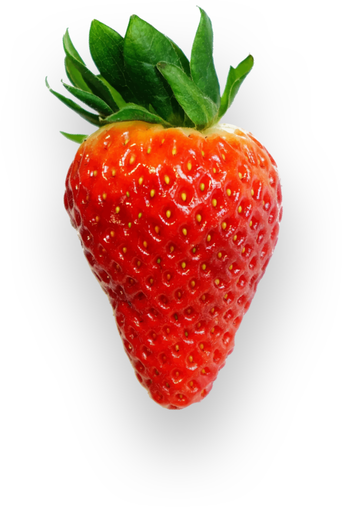

The health benefits of strawberries are fast becoming as sweet and juicy... as the plump red berry itself. The team at Strawberries has developed the next generation of strawberries. Learn more below, or try some strawberries for free!

Daily dose of vitamin C
Weighing in at 150 percent vitamin C (daily value) along with 46 calories per cup..., strawberries pack a heavy punch against those free radicals that go around causing trouble in our bodies.
High in flavonoids properties
Anthocyanins, the stuff that gives strawberries their color, stand out inflavonoids properties, which are a large group of phenolic compounds that go to work making our lives healthier, immediately after consumption.
Help regulate your mood
The seeds of strawberries contain an omega-3 fatty acid, which has been proven to improve mood. Surprisingly, the mood-enhancing advantages are comparable to the mood-stabilizing effects of the commonly prescribed drug valproic acid.
Don’t just take our word for it, though
Millions of customers worldwide have already experienced the joys of fresh, sweet strawberries. Would you like to know more about what strawberries kan do for you? Download our free E-book now!
Oh man, strawberries are my fave. They just taste so amazing!
Shortened lifespan means nutrients last longer
The life span of our strawberries has been shortened somewhat, which increases to a solid 3 days before showing signs of age. That means health enhancing nutrients will stick around longer to help ward off cancers, and heart, cardiovascular, digestive and immune system diseases.